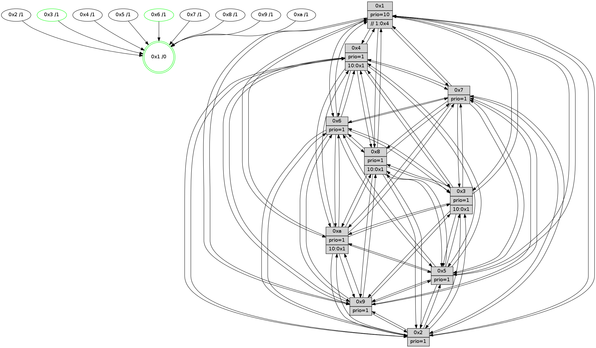

>> << IDX [start] -100 -25 -5 +0 +5 +25 +100 [1025.00884414]
 Previous packets
----------------------------------------------------------------------
1020.270072 beacon01(faad) #0 coord=01,02,03,04,05,06,07,0a,09,08 cycle=688.0ms assoc
-- color-indic=1 64 b9 a3
1020.280053 beacon02(faad) #0 coord=01,02,03,04,05,06,07,0a,09,08 cycle=688.0ms assoc 64 2a 92
1020.290054 beacon03(faad) #0 coord=01,02,03,04,05,06,07,0a,09,08 cycle=688.0ms assoc 64 50 df
1020.300054 beacon04(faad) #0 coord=01,02,03,04,05,06,07,0a,09,08 cycle=688.0ms assoc 64 27 35
1020.310055 beacon05(faad) #0 coord=01,02,03,04,05,06,07,0a,09,08 cycle=688.0ms assoc 64 5d 78
1020.320054 beacon06(faad) #0 coord=01,02,03,04,05,06,07,0a,09,08 cycle=688.0ms assoc 64 d3 af
1020.330055 beacon07(faad) #0 coord=01,02,03,04,05,06,07,0a,09,08 cycle=688.0ms assoc 64 a9 e2
1020.340059 beacon0a(faad) #0 coord=01,02,03,04,05,06,07,0a,09,08 cycle=688.0ms assoc 64 d8 e9
1020.350060 beacon09(faad) #0 coord=01,02,03,04,05,06,07,0a,09,08 cycle=688.0ms assoc 64 56 3e
1020.360060 beacon08(faad) #0 coord=01,02,03,04,05,06,07,0a,09,08 cycle=688.0ms assoc 64 2c 73
1020.371635 [Hello(1): seq=561 sym=4,2,9,5,10,3,8,6,7 sysInfo=coloring-mode-on,ColoringModeRequestCalled stat=4:9,9,5,2/2:8,5,2,13/9:4,0,2,6/5:12,9,11,6/10:11,15,4,4/3:15,3,6,3/8:13,13,3,1/6:13,3,3,11/7:4,3,3,12]
1020.377769 [Hello(2): seq=648 sym=4,5,7,6,3,9,8,10,1 sysInfo=hasWarning stat=4:2,2,8,6/5:6,13,11,2/7:1,7,7,10/6:8,9,15,9/3:5,12,13,5/9:11,2,1,5/8:4,14,10,9/10:7,9,1,10/1:15,12,5,1]
1020.380899 [TreeStatus(3)-.->1 #0.143 tree-change,inconsistent-stability,stable child=1]
1020.384016 [Color(3) seq=281 @0:0 prio=1 >10.@1,1.@4,1.@6,1.@7]
1020.387212 [Hello(6): seq=652 sym=2,3,5,4,7,9,8,10,1 sysInfo= stat=2:3,9,2,2/3:4,15,4,10/5:8,1,3,14/4:9,0,11,2/7:14,1,2,8/9:12,4,4,6/8:9,13,0,3/10:9,10,8,12/1:11,4,6,1]
1020.390341 [Color(6) seq=284 @0:0 prio=1]
----------------------------------------------------------------------
1021.058203 beacon01(faad) #0 coord=01,02,03,04,05,06,07,0a,09,08 cycle=688.0ms assoc
-- color-indic=1 64 05 a6
1021.068185 beacon02(faad) #0 coord=01,02,03,04,05,06,07,0a,09,08 cycle=688.0ms assoc 64 96 97
1021.078185 beacon03(faad) #0 coord=01,02,03,04,05,06,07,0a,09,08 cycle=688.0ms assoc 64 ec da
1021.088186 beacon04(faad) #0 coord=01,02,03,04,05,06,07,0a,09,08 cycle=688.0ms assoc 64 9b 30
1021.098185 beacon05(faad) #0 coord=01,02,03,04,05,06,07,0a,09,08 cycle=688.0ms assoc 64 e1 7d
1021.108187 beacon06(faad) #0 coord=01,02,03,04,05,06,07,0a,09,08 cycle=688.0ms assoc 64 6f aa
1021.118186 beacon07(faad) #0 coord=01,02,03,04,05,06,07,0a,09,08 cycle=688.0ms assoc 64 15 e7
1021.128192 beacon0a(faad) #0 coord=01,02,03,04,05,06,07,0a,09,08 cycle=688.0ms assoc 64 64 ec
1021.138191 beacon09(faad) #0 coord=01,02,03,04,05,06,07,0a,09,08 cycle=688.0ms assoc 64 ea 3b
1021.148192 beacon08(faad) #0 coord=01,02,03,04,05,06,07,0a,09,08 cycle=688.0ms assoc 64 90 76
1021.159364 [Hello(8): seq=596 sym=5,2,3,4,9,6,7,10,1 sysInfo=hasWarning stat=5:4,12,8,14/2:3,5,1,6/3:3,1,4,13/4:13,5,15,8/9:12,14,8,2/6:7,7,3,11/7:8,4,6,2/10:7,8,10,2/1:9,3,3,0]
1021.162268 [Color(2) seq=268 @0:0 prio=1]
1021.163736 [Hello(7): seq=652 sym=2,3,5,6,4,8,9,10,1 sysInfo=hasWarning stat=2:6,2,10,14/3:2,13,6,13/5:1,4,9,0/6:3,14,7,7/4:6,14,2,1/8:13,7,4,1/9:5,6,6,0/10:11,3,11,3/1:1,6,6,0]
1021.166872 [Color(7) seq=222 @0:0 prio=1]
1021.168147 [TreeStatus(5)-.->1 #0.141 tree-change,inconsistent-stability child=1]
1021.169450 [Hello(4): seq=652 sym=5,7,6,2,3,9,8,10,1 sysInfo= stat=5:14,10,1,13/7:14,8,2,9/6:12,9,14,10/2:0,9,11,11/3:4,7,14,9/9:12,14,7,9/8:4,1,5,3/10:10,15,8,11/1:9,15,6,1]
1021.172920 [TreeStatus(4)-.->1 #0.142 tree-change,inconsistent-stability child=1]
1021.174149 [Hello(10): seq=585 sym=6,2,3,8,7,5,9,4,1 sysInfo=hasWarning stat=6:6,6,5,4/2:8,1,14,6/3:1,15,12,9/8:1,9,5,2/7:9,3,5,3/5:14,5,7,13/9:12,11,6,1/4:3,6,8,7/1:8,13,10,1]
1021.179292 [Color(1) seq=333 @0:0 prio=10 >>1.@4,1.@6,1.@7]
1021.182579 [Hello(9): seq=596 sym=2,5,3,4,7,6,8,10,1 sysInfo=hasWarning stat=2:5,11,1,4/5:12,12,15,4/3:6,10,1,13/4:12,4,12,7/7:9,15,0,10/6:9,5,9,9/8:8,9,3,3/10:0,10,4,2/1:13,14,6,1]
1021.186698 [Color(9) seq=269 @0:0 prio=1]
----------------------------------------------------------------------
1021.846335 beacon01(faad) #0 coord=01,02,03,04,05,06,07,0a,09,08 cycle=688.0ms assoc
-- color-indic=1 64 c1 a8
1021.856318 beacon02(faad) #0 coord=01,02,03,04,05,06,07,0a,09,08 cycle=688.0ms assoc 64 52 99
1021.866317 beacon03(faad) #0 coord=01,02,03,04,05,06,07,0a,09,08 cycle=688.0ms assoc 64 28 d4
1021.876319 beacon04(faad) #0 coord=01,02,03,04,05,06,07,0a,09,08 cycle=688.0ms assoc 64 5f 3e
1021.886319 beacon05(faad) #0 coord=01,02,03,04,05,06,07,0a,09,08 cycle=688.0ms assoc 64 25 73
1021.896319 beacon06(faad) #0 coord=01,02,03,04,05,06,07,0a,09,08 cycle=688.0ms assoc 64 ab a4
1021.906319 beacon07(faad) #0 coord=01,02,03,04,05,06,07,0a,09,08 cycle=688.0ms assoc 64 d1 e9
1021.916323 beacon0a(faad) #0 coord=01,02,03,04,05,06,07,0a,09,08 cycle=688.0ms assoc 64 a0 e2
1021.926323 beacon09(faad) #0 coord=01,02,03,04,05,06,07,0a,09,08 cycle=688.0ms assoc 64 2e 35
1021.936323 beacon08(faad) #0 coord=01,02,03,04,05,06,07,0a,09,08 cycle=688.0ms assoc 64 54 78
1021.948194 [Hello(2): seq=649 sym=4,5,7,6,3,9,8,10,1 sysInfo=hasWarning stat=4:3,2,8,7/5:6,13,11,3/7:2,8,7,10/6:9,10,15,9/3:5,13,13,6/9:12,3,1,5/8:5,14,10,9/10:8,9,1,10/1:15,13,5,1]
1021.951249 [Hello(3): seq=653 sym=1,7,6,2,4,8,9,10,5 sysInfo= stat=1:11,13,1,0/7:3,4,11,9/6:4,0,13,3/2:12,12,15,12/4:11,7,2,8/8:6,2,11,2/9:4,12,0,12/10:3,13,14,3/5:12,3,9,13]
1021.954199 [Hello(1): seq=562 sym=4,2,9,5,10,3,8,6,7 sysInfo=coloring-mode-on,ColoringModeRequestCalled stat=4:9,9,5,2/2:9,6,2,13/9:5,1,2,6/5:12,9,11,6/10:11,15,4,4/3:0,4,6,4/8:14,13,3,1/6:14,4,3,11/7:4,3,3,12]
1021.957642 [STC(1) #0.144 tree-change,inconsistent-stability,stable,to-color d=0]
1021.959544 [Hello(6): seq=653 sym=2,3,5,4,7,9,8,10,1 sysInfo= stat=2:3,10,2,2/3:4,15,4,10/5:8,1,3,15/4:10,0,11,3/7:15,2,2,8/9:13,5,4,6/8:10,13,0,3/10:10,10,8,12/1:12,5,6,1]
1021.962005 [Color(3) seq=282 @0:0 prio=1 >10.@1,1.@4,1.@6,1.@7]
1021.965791 [Color(6) seq=285 @0:0 prio=1]
1021.971699 [Hello(5): seq=653 sym=7,6,4,3,1,9,8,10,2 sysInfo=hasWarning stat=7:8,6,8,11/6:12,5,9,0/4:7,4,4,9/3:10,4,14,11/1:4,10,8,1/9:3,10,4,6/8:8,2,1,0/10:1,6,13,6/2:13,9,3,2]
----------------------------------------------------------------------
1022.634466 beacon01(faad) #0 coord=01,02,03,04,05,06,07,0a,09,08 cycle=688.0ms assoc
-- color-indic=1 64 7d ad
1022.644448 beacon02(faad) #0 coord=01,02,03,04,05,06,07,0a,09,08 cycle=688.0ms assoc 64 ee 9c
1022.654448 beacon03(faad) #0 coord=01,02,03,04,05,06,07,0a,09,08 cycle=688.0ms assoc 64 94 d1
1022.664448 beacon04(faad) #0 coord=01,02,03,04,05,06,07,0a,09,08 cycle=688.0ms assoc 64 e3 3b
1022.674449 beacon05(faad) #0 coord=01,02,03,04,05,06,07,0a,09,08 cycle=688.0ms assoc 64 99 76
1022.684449 beacon06(faad) #0 coord=01,02,03,04,05,06,07,0a,09,08 cycle=688.0ms assoc 64 17 a1
1022.694450 beacon07(faad) #0 coord=01,02,03,04,05,06,07,0a,09,08 cycle=688.0ms assoc 64 6d ec
1022.704453 beacon0a(faad) #0 coord=01,02,03,04,05,06,07,0a,09,08 cycle=688.0ms assoc 64 1c e7
1022.714456 beacon09(faad) #0 coord=01,02,03,04,05,06,07,0a,09,08 cycle=688.0ms assoc 64 92 30
1022.724455 beacon08(faad) #0 coord=01,02,03,04,05,06,07,0a,09,08 cycle=688.0ms assoc 64 e8 7d
1022.735860 [Hello(9): seq=597 sym=2,5,3,4,7,6,8,10,1 sysInfo=hasWarning stat=2:6,12,1,4/5:13,12,15,4/3:7,11,1,13/4:12,4,12,7/7:9,15,0,10/6:10,6,9,9/8:9,9,3,3/10:0,10,4,2/1:14,14,7,1]
1022.739661 [STC(9)->1 #0.144 to-color d=1]
1022.741431 [Hello(7): seq=653 sym=2,3,5,6,4,8,9,10,1 sysInfo=hasWarning stat=2:7,3,10,14/3:3,14,6,13/5:2,4,9,1/6:4,15,7,7/4:7,14,2,2/8:14,7,4,1/9:6,7,6,0/10:12,3,11,3/1:2,7,7,0]
1022.745254 [Color(1) seq=334 @0:0 prio=10 >>1.@4,1.@6,1.@7]
1022.749485 [STC(7)->1 #0.144 to-color d=1]
1022.751598 [STC(2)->1 #0.144 to-color d=1]
1022.752880 [Hello(8): seq=597 sym=5,2,3,4,9,6,7,10,1 sysInfo=hasWarning stat=5:5,12,8,15/2:4,6,1,6/3:4,2,4,13/4:14,5,15,9/9:13,15,8,2/6:8,8,3,11/7:9,5,6,2/10:8,8,10,2/1:10,4,4,0]
1022.755359 [Hello(10): seq=586 sym=6,2,3,8,7,5,9,4,1 sysInfo=hasWarning stat=6:7,7,5,4/2:9,1,14,6/3:2,0,12,9/8:1,9,5,2/7:9,3,5,3/5:15,5,7,13/9:13,12,6,1/4:3,6,8,7/1:9,14,11,1]
1022.758179 [STC(10)->1 #0.144 to-color d=1]
1022.760298 [STC(8)->1 #0.144 tree-change,inconsistent-stability,to-color d=1]
1022.761665 [Hello(4): seq=653 sym=5,7,6,2,3,9,8,10,1 sysInfo= stat=5:15,10,1,13/7:14,8,2,9/6:13,10,14,10/2:1,9,11,11/3:5,8,14,9/9:13,15,7,9/8:4,1,5,3/10:11,15,8,11/1:10,0,7,1]
1022.766385 [STC(4)->1 #0.144 tree-change,inconsistent-stability,to-color d=1]
----------------------------------------------------------------------
1023.422597 beacon01(faad) #0 coord=01,02,03,04,05,06,07,0a,09,08 cycle=688.0ms assoc
-- color-indic=1 64 49 b5
1023.432580 beacon02(faad) #0 coord=01,02,03,04,05,06,07,0a,09,08 cycle=688.0ms assoc 64 da 84
1023.442580 beacon03(faad) #0 coord=01,02,03,04,05,06,07,0a,09,08 cycle=688.0ms assoc 64 a0 c9
1023.452580 beacon04(faad) #0 coord=01,02,03,04,05,06,07,0a,09,08 cycle=688.0ms assoc 64 d7 23
1023.462582 beacon05(faad) #0 coord=01,02,03,04,05,06,07,0a,09,08 cycle=688.0ms assoc 64 ad 6e
1023.472580 beacon06(faad) #0 coord=01,02,03,04,05,06,07,0a,09,08 cycle=688.0ms assoc 64 23 b9
1023.482581 beacon07(faad) #0 coord=01,02,03,04,05,06,07,0a,09,08 cycle=688.0ms assoc 64 59 f4
1023.492586 beacon0a(faad) #0 coord=01,02,03,04,05,06,07,0a,09,08 cycle=688.0ms assoc 64 28 ff
1023.502585 beacon09(faad) #0 coord=01,02,03,04,05,06,07,0a,09,08 cycle=688.0ms assoc 64 a6 28
1023.512587 beacon08(faad) #0 coord=01,02,03,04,05,06,07,0a,09,08 cycle=688.0ms assoc 64 dc 65
1023.524808 [Hello(1): seq=563 sym=4,2,9,5,10,3,8,6,7 sysInfo=coloring-mode-on,ColoringModeRequestCalled stat=4:10,9,6,2/2:9,6,3,13/9:6,1,2,6/5:13,9,11,6/10:12,15,5,4/3:0,5,6,4/8:15,13,4,1/6:15,5,3,11/7:4,3,4,12]
1023.527852 [Hello(3): seq=654 sym=1,7,6,2,4,8,9,10,5 sysInfo=hasWarning stat=1:11,14,1,0/7:4,4,12,9/6:4,1,13,3/2:13,12,0,12/4:12,7,3,8/8:7,2,12,2/9:5,12,1,12/10:4,13,15,3/5:13,3,9,13]
1023.531952 [Hello(6): seq=654 sym=2,3,5,4,7,9,8,10,1 sysInfo= stat=2:4,10,3,2/3:5,0,4,10/5:9,1,3,15/4:11,0,12,3/7:0,2,3,8/9:14,5,5,6/8:11,13,1,3/10:11,10,9,12/1:12,6,6,1]
1023.535606 [Color(3) seq=283 @0:0 prio=1 >10.@1,1.@4,1.@6,1.@7]
1023.537273 [Hello(2): seq=650 sym=4,5,7,6,3,9,8,10,1 sysInfo=hasWarning stat=4:4,2,9,7/5:7,13,11,3/7:2,8,7,10/6:10,11,15,9/3:6,14,13,6/9:12,3,1,5/8:6,14,11,9/10:9,9,2,10/1:0,13,6,1]
1023.543038 [Hello(5): seq=654 sym=7,6,4,3,1,9,8,10,2 sysInfo=hasWarning stat=7:9,6,9,11/6:12,5,9,0/4:8,4,5,9/3:10,4,14,11/1:4,11,8,1/9:4,10,5,6/8:9,2,2,0/10:2,6,14,6/2:13,9,4,2]
1023.548936 [Color(6) seq=286 @0:0 prio=1]
----------------------------------------------------------------------
1024.210730 beacon01(faad) #0 coord=01,02,03,04,05,06,07,0a,09,08 cycle=688.0ms assoc
-- color-indic=1 64 f5 b0
1024.220712 beacon02(faad) #0 coord=01,02,03,04,05,06,07,0a,09,08 cycle=688.0ms assoc 64 66 81
1024.230713 beacon03(faad) #0 coord=01,02,03,04,05,06,07,0a,09,08 cycle=688.0ms assoc 64 1c cc
1024.240713 beacon04(faad) #0 coord=01,02,03,04,05,06,07,0a,09,08 cycle=688.0ms assoc 64 6b 26
1024.250713 beacon05(faad) #0 coord=01,02,03,04,05,06,07,0a,09,08 cycle=688.0ms assoc 64 11 6b
1024.260714 beacon06(faad) #0 coord=01,02,03,04,05,06,07,0a,09,08 cycle=688.0ms assoc 64 9f bc
1024.270716 beacon07(faad) #0 coord=01,02,03,04,05,06,07,0a,09,08 cycle=688.0ms assoc 64 e5 f1
1024.280717 beacon0a(faad) #0 coord=01,02,03,04,05,06,07,0a,09,08 cycle=688.0ms assoc 64 94 fa
1024.290717 beacon09(faad) #0 coord=01,02,03,04,05,06,07,0a,09,08 cycle=688.0ms assoc 64 1a 2d
1024.300717 beacon08(faad) #0 coord=01,02,03,04,05,06,07,0a,09,08 cycle=688.0ms assoc 64 60 60
1024.312192 [Hello(10): seq=587 sym=6,2,3,8,7,5,9,4,1 sysInfo=hasWarning stat=6:8,8,5,4/2:10,1,14,6/3:3,1,12,9/8:1,9,6,2/7:9,3,5,3/5:0,5,7,13/9:13,12,6,1/4:4,6,9,7/1:10,14,11,1]
1024.315669 [Color(1) seq=335 @0:0 prio=10 >>1.@4,1.@6,1.@7]
1024.318206 [Hello(9): seq=598 sym=2,5,3,4,7,6,8,10,1 sysInfo=hasWarning stat=2:7,12,2,4/5:14,12,15,4/3:8,12,1,13/4:13,4,13,7/7:10,15,1,10/6:11,7,9,9/8:10,9,4,3/10:1,10,5,2/1:15,15,7,1]
1024.323044 [Hello(4): seq=654 sym=5,7,6,2,3,9,8,10,1 sysInfo= stat=5:0,10,1,13/7:14,8,2,9/6:14,11,14,10/2:2,9,11,11/3:6,9,14,9/9:13,15,7,9/8:4,1,5,3/10:11,15,8,11/1:11,0,7,1]
1024.331609 [Hello(7): seq=654 sym=2,3,5,6,4,8,9,10,1 sysInfo=hasWarning stat=2:8,3,11,14/3:4,15,6,13/5:3,4,9,1/6:5,0,7,7/4:8,14,3,2/8:15,7,5,1/9:6,7,6,0/10:13,3,12,3/1:3,7,7,0]
----------------------------------------------------------------------
1024.998861 beacon01(faad) #0 coord=01,02,03,04,05,06,07,0a,09,08 cycle=688.0ms assoc
-- color-indic=1 64 31 be